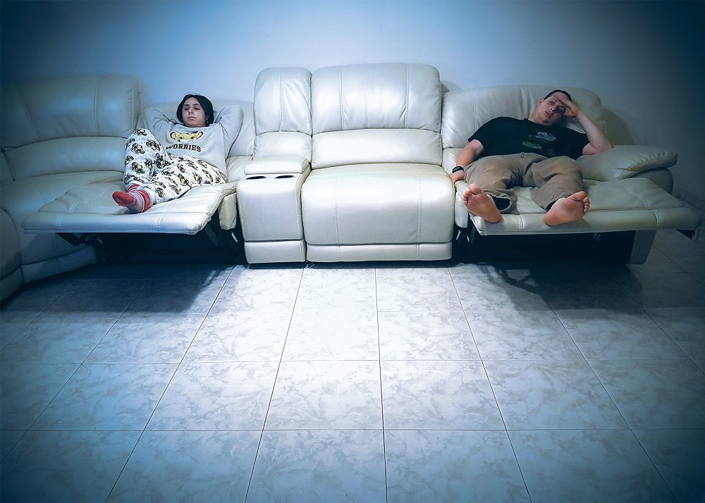
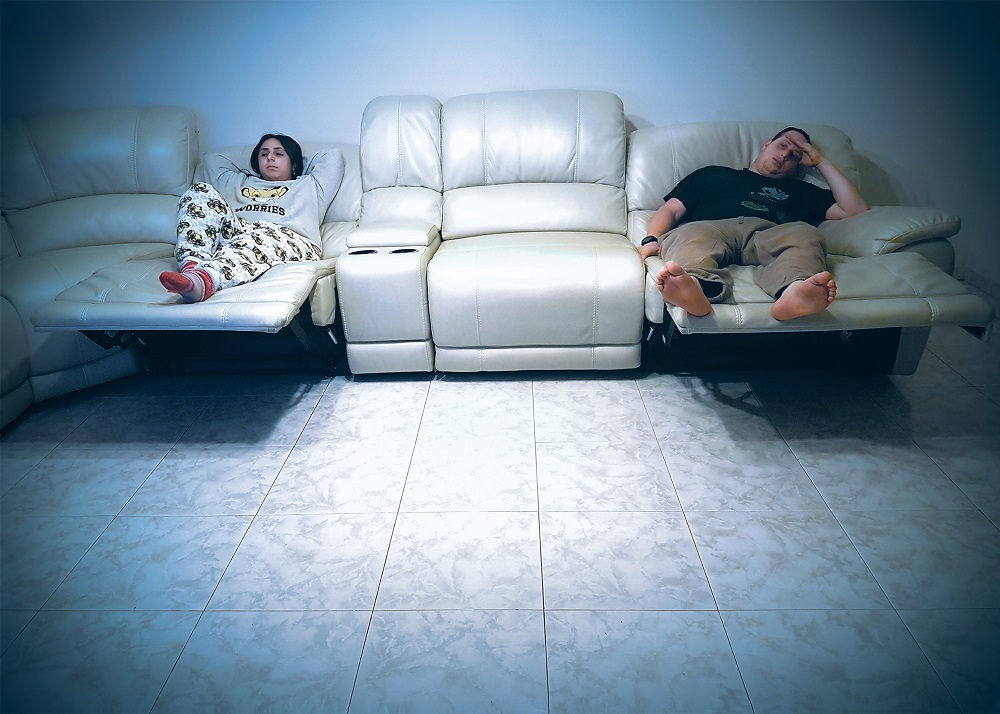

תיק עבודות הדר בוסתנאי
פרויקט סיום תקשורת חזותית - "ביחד וכל אחד לחוד"
במסגרת פרויקט סיום בקורס תקשורת חזותית יצרנו חידוש מקורי ליצירה קיימת-
"A family on their lawn one Sunday in Westchester, N.Y".
באמצעות היצירה החדשה, רצינו להעביר את תחושת הניכור הנובעת מהתמונה המקורית, בדרך מודרנית המשקפת את אורח החיים של בני דורנו.
הסבר מפורט אודות תהליך העבודה והתוצר תוכלו לקבל בוידאו הנמצא בעמוד זה.
פרויקט זה נעשה בשיתוף חברי ללימודים - סהר ברכה ורון ראובני.
 
